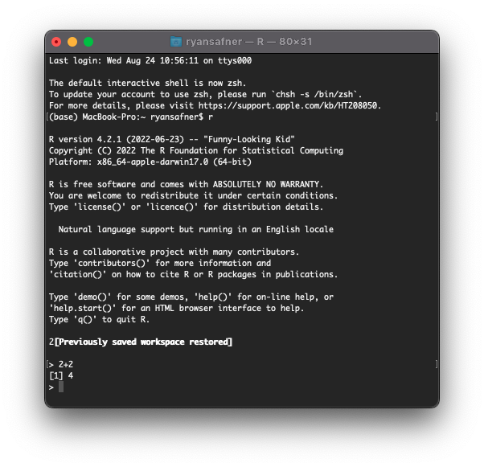
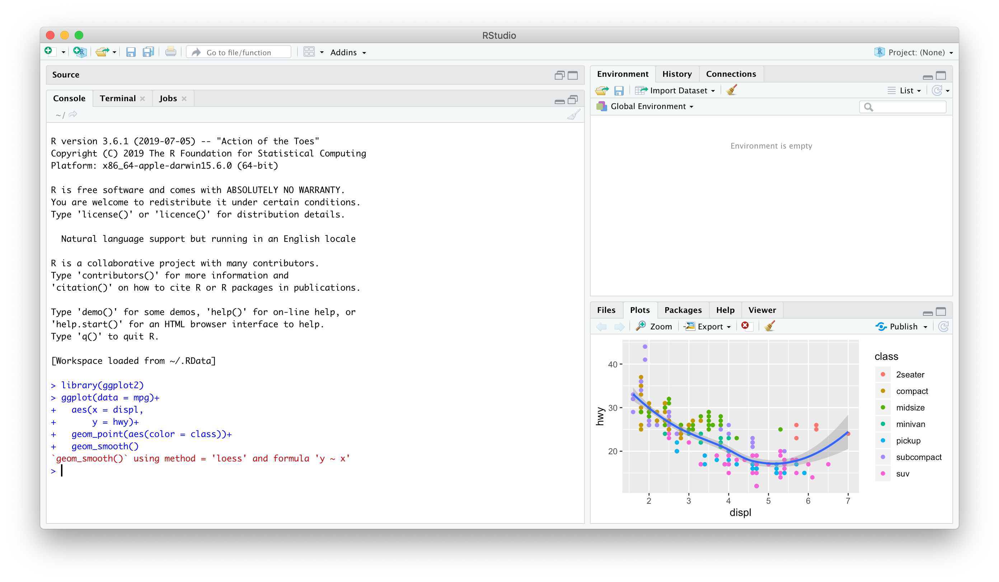
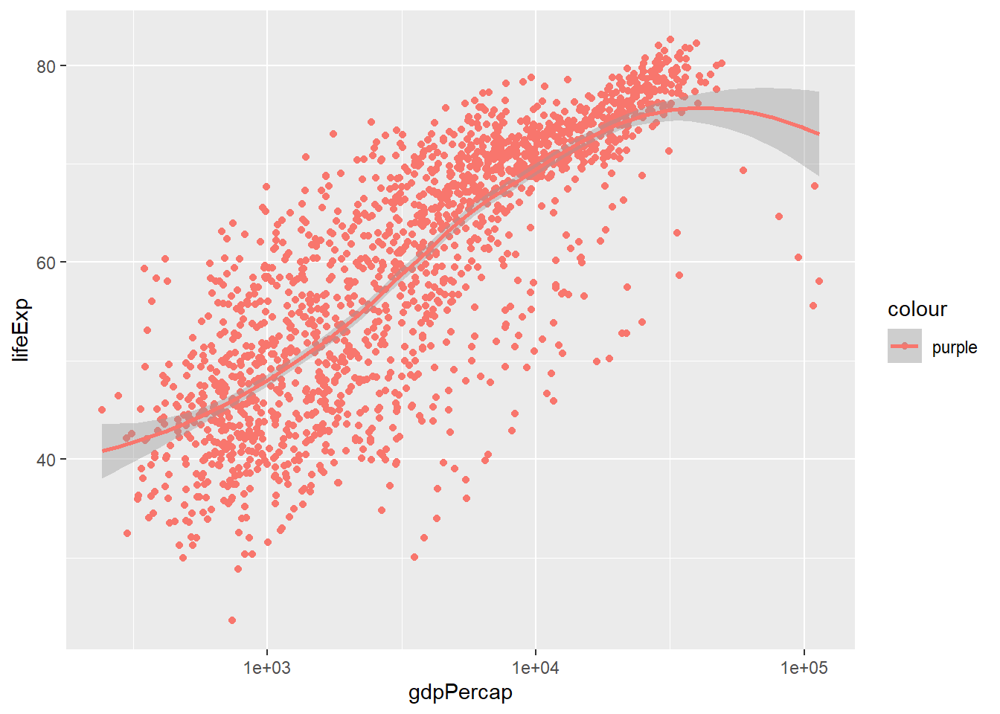

ggplot(data = gapminder,
aes(x = gdpPercap,
y = lifeExp,
color = continent))+
geom_point(alpha=0.3)+
geom_smooth(method = "lm")+
scale_x_log10(breaks=c(1000,10000, 100000),
label=scales::dollar)+
labs(x = "GDP/Capita",
y = "Life Expectancy (Years)")+
facet_wrap(~continent)+
guides(color = F)+
theme_light()Basic Data Handling Techniques in R
Agenda
5 Important verbs for handling data
View, glimpse, structure, head, tail
select() for column selection
filter() for data filtering
arrange() Data Ordering
mutate() Creating Derived Columns
summarise() Calculating Summary Statistics
group_by()
Data Science
You go into data analysis with the tools you know, not the tools you need
The next couple of days are all about giving you the tools you need
- Admittedly, a bit before you know what you need them for
We will extend them as we learn specific models
R
Free and open source
A very large community
- Written by statisticians for statistics
- Most packages are written for
Rfirst
Can handle virtually any data format
Makes replication easy
Can integrate into documents (with
R markdown)R is a language so it can do everything
- A good stepping stone to learning other languages like Python

Excel (or Stata) Can’t Do This
Warning: `guides(<scale> = FALSE)` is deprecated. Please use `guides(<scale> =
"none")` instead.`geom_smooth()` using formula 'y ~ x'
Or This
The average GDP per capita is ` r dollar(mean(gapminder$gdpPercap)) ` with a standard deviation of ` r dollar(sd(gapminder$gdpPercap)) `.
The average GDP per capita is $7,215.33 with a standard deviation of $9,857.45.
Or This
library(leaflet)
leaflet() %>%
addTiles() %>%
addMarkers(lng = 73.136946, lat =33.748294 ,
popup = "School of Economics, QAU, Islamabad")Meet R and R Studio
R and R Studio
R is the programming language that executes commands
Could run this from your computer’s shell
- On Windows: Command prompt
- On Mac/Linux: Terminal

R and R Studio
- R Studio1 is an integrated development environment (IDE) that makes your coding life a lot easier
- Write code in scripts
- Execute individual commands & scripts
- Auto-complete, highlight syntax
- View data, objects, and plots
- Get help and documentation on commands and functions
- Integrate code into documents with
Quarto

R Studio — Four Panes
Ways to Use R Studio: Using the Console
Type individual commands into the console pane (bottom left)
Great for testing individual commands to see what happens
Not saved! Not reproducible! Not recommended!

Ways to Use R Studio: Writing a .R Script
Source pane is a text-editor
Make
.Rfiles: all input commands in a single scriptComment with
#Can run any or all of script at once
Can save, reproduce, and send to others!

I have discussed the Gapminder dataset in my videos and we shall use it as a reference for this training. It’s available through CRAN, so make sure to install it. Here’s how to load in all required packages:
The dataset is provided in the gapminder library
library(gapminder)
gapminder %>% filter(country=="Sweden")%>%
mutate(gdpPercap=round(gdpPercap,0), lifeExp=round(lifeExp,2))%>%kable()%>%
kable_styling(bootstrap_options = "striped", full_width = F)| country | continent | year | lifeExp | pop | gdpPercap |
|---|---|---|---|---|---|
| Sweden | Europe | 1952 | 71.86 | 7124673 | 8528 |
| Sweden | Europe | 1957 | 72.49 | 7363802 | 9912 |
| Sweden | Europe | 1962 | 73.37 | 7561588 | 12329 |
| Sweden | Europe | 1967 | 74.16 | 7867931 | 15258 |
| Sweden | Europe | 1972 | 74.72 | 8122293 | 17832 |
| Sweden | Europe | 1977 | 75.44 | 8251648 | 18856 |
| Sweden | Europe | 1982 | 76.42 | 8325260 | 20667 |
| Sweden | Europe | 1987 | 77.19 | 8421403 | 23587 |
| Sweden | Europe | 1992 | 78.16 | 8718867 | 23880 |
| Sweden | Europe | 1997 | 79.39 | 8897619 | 25267 |
| Sweden | Europe | 2002 | 80.04 | 8954175 | 29342 |
| Sweden | Europe | 2007 | 80.88 | 9031088 | 33860 |
Information in gapminder data
View command opens data in new worksheet while glimpse lists nature of variables (numeric/character/factor…) and total number of rows and columns.
glimpse(gapminder) # We see that there are 1704 rows for 6 columns and also tells nature of variableRows: 1,704
Columns: 6
$ country <fct> "Afghanistan", "Afghanistan", "Afghanistan", "Afghanistan", …
$ continent <fct> Asia, Asia, Asia, Asia, Asia, Asia, Asia, Asia, Asia, Asia, …
$ year <int> 1952, 1957, 1962, 1967, 1972, 1977, 1982, 1987, 1992, 1997, …
$ lifeExp <dbl> 28.801, 30.332, 31.997, 34.020, 36.088, 38.438, 39.854, 40.8…
$ pop <int> 8425333, 9240934, 10267083, 11537966, 13079460, 14880372, 12…
$ gdpPercap <dbl> 779.4453, 820.8530, 853.1007, 836.1971, 739.9811, 786.1134, …#View(gapminder) # This opens up full data in a new windowFiltering with respect to two variables
One can apply multiple filters
gapminder %>% filter(year==2007,country=="Sri Lanka")# A tibble: 1 × 6
country continent year lifeExp pop gdpPercap
<fct> <fct> <int> <dbl> <int> <dbl>
1 Sri Lanka Asia 2007 72.4 20378239 3970.gapminder %>% filter(year==2007, country=="Pakistan")# A tibble: 1 × 6
country continent year lifeExp pop gdpPercap
<fct> <fct> <int> <dbl> <int> <dbl>
1 Pakistan Asia 2007 65.5 169270617 2606.Now we are selecting multiple countries for year 2007.
gapminder %>% filter(year==2007, country %in% c("India", "Pakistan","Bangladesh", "Afghanistan", "Iran"))# A tibble: 5 × 6
country continent year lifeExp pop gdpPercap
<fct> <fct> <int> <dbl> <int> <dbl>
1 Afghanistan Asia 2007 43.8 31889923 975.
2 Bangladesh Asia 2007 64.1 150448339 1391.
3 India Asia 2007 64.7 1110396331 2452.
4 Iran Asia 2007 71.0 69453570 11606.
5 Pakistan Asia 2007 65.5 169270617 2606.Filtering data for South Asia countries
gapminderSA<-gapminder %>% filter(country %in% c("Bangladesh","India","Pakistan","Sri Lanka","Nepal", "Afghanistan","Bhutan", "Maldives"))
gapminderSA# A tibble: 72 × 6
country continent year lifeExp pop gdpPercap
<fct> <fct> <int> <dbl> <int> <dbl>
1 Afghanistan Asia 1952 28.8 8425333 779.
2 Afghanistan Asia 1957 30.3 9240934 821.
3 Afghanistan Asia 1962 32.0 10267083 853.
4 Afghanistan Asia 1967 34.0 11537966 836.
5 Afghanistan Asia 1972 36.1 13079460 740.
6 Afghanistan Asia 1977 38.4 14880372 786.
7 Afghanistan Asia 1982 39.9 12881816 978.
8 Afghanistan Asia 1987 40.8 13867957 852.
9 Afghanistan Asia 1992 41.7 16317921 649.
10 Afghanistan Asia 1997 41.8 22227415 635.
# … with 62 more rows
# ℹ Use `print(n = ...)` to see more rowsSort data with arrange()
gapminderSA %>% arrange(gdpPercap)# A tibble: 72 × 6
country continent year lifeExp pop gdpPercap
<fct> <fct> <int> <dbl> <int> <dbl>
1 Nepal Asia 1952 36.2 9182536 546.
2 India Asia 1952 37.4 372000000 547.
3 India Asia 1957 40.2 409000000 590.
4 Nepal Asia 1957 37.7 9682338 598.
5 Bangladesh Asia 1972 45.3 70759295 630.
6 Afghanistan Asia 1997 41.8 22227415 635.
7 Afghanistan Asia 1992 41.7 16317921 649.
8 Nepal Asia 1962 39.4 10332057 652.
9 India Asia 1962 43.6 454000000 658.
10 Bangladesh Asia 1977 46.9 80428306 660.
# … with 62 more rows
# ℹ Use `print(n = ...)` to see more rows##
Note that by default arrange() sorts in ascending order. If we want to sort in descending order, we use the function desc().
gapminderSA %>% arrange(desc(gdpPercap))# A tibble: 72 × 6
country continent year lifeExp pop gdpPercap
<fct> <fct> <int> <dbl> <int> <dbl>
1 Sri Lanka Asia 2007 72.4 20378239 3970.
2 Sri Lanka Asia 2002 70.8 19576783 3015.
3 Sri Lanka Asia 1997 70.5 18698655 2664.
4 Pakistan Asia 2007 65.5 169270617 2606.
5 India Asia 2007 64.7 1110396331 2452.
6 Sri Lanka Asia 1992 70.4 17587060 2154.
7 Pakistan Asia 2002 63.6 153403524 2093.
8 Pakistan Asia 1997 61.8 135564834 2049.
9 Pakistan Asia 1992 60.8 120065004 1972.
10 Sri Lanka Asia 1987 69.0 16495304 1877.
# … with 62 more rows
# ℹ Use `print(n = ...)` to see more rowsLife Expectancy in South Asia in 2007
What is the lowest and highest life expectancy among South Asian countries?
gapminderSA %>% filter(year==2007) %>% arrange(lifeExp)# A tibble: 6 × 6
country continent year lifeExp pop gdpPercap
<fct> <fct> <int> <dbl> <int> <dbl>
1 Afghanistan Asia 2007 43.8 31889923 975.
2 Nepal Asia 2007 63.8 28901790 1091.
3 Bangladesh Asia 2007 64.1 150448339 1391.
4 India Asia 2007 64.7 1110396331 2452.
5 Pakistan Asia 2007 65.5 169270617 2606.
6 Sri Lanka Asia 2007 72.4 20378239 3970.What was it in 1952?
mutate() to change existing or create new variable
gapminderSA %>% mutate(pop=pop/1000000)# A tibble: 72 × 6
country continent year lifeExp pop gdpPercap
<fct> <fct> <int> <dbl> <dbl> <dbl>
1 Afghanistan Asia 1952 28.8 8.43 779.
2 Afghanistan Asia 1957 30.3 9.24 821.
3 Afghanistan Asia 1962 32.0 10.3 853.
4 Afghanistan Asia 1967 34.0 11.5 836.
5 Afghanistan Asia 1972 36.1 13.1 740.
6 Afghanistan Asia 1977 38.4 14.9 786.
7 Afghanistan Asia 1982 39.9 12.9 978.
8 Afghanistan Asia 1987 40.8 13.9 852.
9 Afghanistan Asia 1992 41.7 16.3 649.
10 Afghanistan Asia 1997 41.8 22.2 635.
# … with 62 more rows
# ℹ Use `print(n = ...)` to see more rowsIf we want to calculate GDP, we need to multiply gdpPercap by pop.
But wait! Didn’t we just change pop so it’s expressed in millions? No: we never stored the results of our previous command, we simply displayed them. Just as I discussed above, unless you overwrite it, the original gapminder dataset will be unchanged. With this in mind, we can create the gdp variable as follows:
gapminderSA %>% mutate(gdp = pop * gdpPercap)# A tibble: 72 × 7
country continent year lifeExp pop gdpPercap gdp
<fct> <fct> <int> <dbl> <int> <dbl> <dbl>
1 Afghanistan Asia 1952 28.8 8425333 779. 6567086330.
2 Afghanistan Asia 1957 30.3 9240934 821. 7585448670.
3 Afghanistan Asia 1962 32.0 10267083 853. 8758855797.
4 Afghanistan Asia 1967 34.0 11537966 836. 9648014150.
5 Afghanistan Asia 1972 36.1 13079460 740. 9678553274.
6 Afghanistan Asia 1977 38.4 14880372 786. 11697659231.
7 Afghanistan Asia 1982 39.9 12881816 978. 12598563401.
8 Afghanistan Asia 1987 40.8 13867957 852. 11820990309.
9 Afghanistan Asia 1992 41.7 16317921 649. 10595901589.
10 Afghanistan Asia 1997 41.8 22227415 635. 14121995875.
# … with 62 more rows
# ℹ Use `print(n = ...)` to see more rowsHow to calculate new variables
As mentioned above, mutate is used to calculate new variable. Here we have calculated a new variable gdp and then arrange() data and selected top_n(10) countries to see whether higher lifeExpectancy and higher gdp are linked or not?
gapminder %>% filter(year==2007) %>%
mutate(gdp=gdpPercap*pop) %>%
arrange(desc(gdp)) %>%
top_n(10)Selecting by gdp# A tibble: 10 × 7
country continent year lifeExp pop gdpPercap gdp
<fct> <fct> <int> <dbl> <int> <dbl> <dbl>
1 United States Americas 2007 78.2 301139947 42952. 1.29e13
2 China Asia 2007 73.0 1318683096 4959. 6.54e12
3 Japan Asia 2007 82.6 127467972 31656. 4.04e12
4 India Asia 2007 64.7 1110396331 2452. 2.72e12
5 Germany Europe 2007 79.4 82400996 32170. 2.65e12
6 United Kingdom Europe 2007 79.4 60776238 33203. 2.02e12
7 France Europe 2007 80.7 61083916 30470. 1.86e12
8 Brazil Americas 2007 72.4 190010647 9066. 1.72e12
9 Italy Europe 2007 80.5 58147733 28570. 1.66e12
10 Mexico Americas 2007 76.2 108700891 11978. 1.30e12transmute() keeps only the derived column. Let’s use it in the example from above:
gapminder %>% filter(year==2007) %>%
transmute(gdp=gdpPercap*pop) %>%
arrange(desc(gdp)) %>%
top_n(10)Selecting by gdp# A tibble: 10 × 1
gdp
<dbl>
1 1.29e13
2 6.54e12
3 4.04e12
4 2.72e12
5 2.65e12
6 2.02e12
7 1.86e12
8 1.72e12
9 1.66e12
10 1.30e12Ordering
arrange data by life expectancy, we use arrange() function
gapminder %>%
select(country, year,lifeExp) %>%
filter(year==2007) %>%
arrange(lifeExp)# A tibble: 142 × 3
country year lifeExp
<fct> <int> <dbl>
1 Swaziland 2007 39.6
2 Mozambique 2007 42.1
3 Zambia 2007 42.4
4 Sierra Leone 2007 42.6
5 Lesotho 2007 42.6
6 Angola 2007 42.7
7 Zimbabwe 2007 43.5
8 Afghanistan 2007 43.8
9 Central African Republic 2007 44.7
10 Liberia 2007 45.7
# … with 132 more rows
# ℹ Use `print(n = ...)` to see more rowstop to bottom, then use arrange(desc()) command as follows:
gapminder %>%
select(country, year,lifeExp) %>%
filter(year==2007) %>%
arrange(desc(lifeExp))# A tibble: 142 × 3
country year lifeExp
<fct> <int> <dbl>
1 Japan 2007 82.6
2 Hong Kong, China 2007 82.2
3 Iceland 2007 81.8
4 Switzerland 2007 81.7
5 Australia 2007 81.2
6 Spain 2007 80.9
7 Sweden 2007 80.9
8 Israel 2007 80.7
9 France 2007 80.7
10 Canada 2007 80.7
# … with 132 more rows
# ℹ Use `print(n = ...)` to see more rowsTop 5
gapminder %>%
select(country, year,lifeExp) %>%
filter(year==2007) %>%
arrange(desc(lifeExp)) %>%
top_n(5)Selecting by lifeExp# A tibble: 5 × 3
country year lifeExp
<fct> <int> <dbl>
1 Japan 2007 82.6
2 Hong Kong, China 2007 82.2
3 Iceland 2007 81.8
4 Switzerland 2007 81.7
5 Australia 2007 81.2Summarising data
Another feature of dplyr is summarise data
gapminder %>% filter(year==2007) %>% group_by(continent) %>% summarise(mean=mean(lifeExp),min=min(lifeExp),max=max(lifeExp))# A tibble: 5 × 4
continent mean min max
<fct> <dbl> <dbl> <dbl>
1 Africa 54.8 39.6 76.4
2 Americas 73.6 60.9 80.7
3 Asia 70.7 43.8 82.6
4 Europe 77.6 71.8 81.8
5 Oceania 80.7 80.2 81.2gapminder %>%
summarise(avglifeExp=mean(lifeExp))# A tibble: 1 × 1
avglifeExp
<dbl>
1 59.5Summarising data by groups
gapminder %>%
filter(year == 2007, continent == "Asia") %>%
summarize(avgLifeExp = mean(lifeExp)) # A tibble: 1 × 1
avgLifeExp
<dbl>
1 70.7gapminder %>%
group_by(continent) %>%
filter(year==2007) %>%
summarize(avglife=mean(lifeExp))# A tibble: 5 × 2
continent avglife
<fct> <dbl>
1 Africa 54.8
2 Americas 73.6
3 Asia 70.7
4 Europe 77.6
5 Oceania 80.7we could get the mean, maximum, and mean life expectancy of the entire dataset.
gapminder %>%
summarise(
lifeExp_min = min(lifeExp),
lifeExp_max = max(lifeExp),
lifeExp_mean = mean(lifeExp)
)# A tibble: 1 × 3
lifeExp_min lifeExp_max lifeExp_mean
<dbl> <dbl> <dbl>
1 23.6 82.6 59.5For example, let’s say we want to get the mean, minimum, and maximum of life expectancy, but instead of for the entire dataset, we want to see it for each year.
gapminder %>%
group_by(year) %>%
summarise(
lifeExp_min = min(lifeExp),
lifeExp_max = max(lifeExp),
lifeExp_mean = mean(lifeExp)
)# A tibble: 12 × 4
year lifeExp_min lifeExp_max lifeExp_mean
<int> <dbl> <dbl> <dbl>
1 1952 28.8 72.7 49.1
2 1957 30.3 73.5 51.5
3 1962 32.0 73.7 53.6
4 1967 34.0 74.2 55.7
5 1972 35.4 74.7 57.6
6 1977 31.2 76.1 59.6
7 1982 38.4 77.1 61.5
8 1987 39.9 78.7 63.2
9 1992 23.6 79.4 64.2
10 1997 36.1 80.7 65.0
11 2002 39.2 82 65.7
12 2007 39.6 82.6 67.0dplyr tutorial0
if_else command alongwith mutate
gapminder %>%
filter(year == 2007) %>%
group_by(continent) %>%
summarize(avgLifeExp = mean(lifeExp)) %>%
mutate(over75 = if_else(avgLifeExp > 70, "Y", "N"))# A tibble: 5 × 3
continent avgLifeExp over75
<fct> <dbl> <chr>
1 Africa 54.8 N
2 Americas 73.6 Y
3 Asia 70.7 Y
4 Europe 77.6 Y
5 Oceania 80.7 Y Total Population by Continents in 2007
gapminder %>%
filter(year==2007) %>%
group_by(continent) %>%
summarize(tot_pop=sum(pop)) # A tibble: 5 × 2
continent tot_pop
<fct> <dbl>
1 Africa 929539692
2 Americas 898871184
3 Asia 3811953827
4 Europe 586098529
5 Oceania 24549947Percentiles
In general it is assumed that higher the GDP , higher the lifeExp. To test this assumption, lets calculate percentiles of lifeExp. This will indicate how many countries have ranking lower than the current country.
gapminder %>% select(country,year, lifeExp, gdpPercap) %>%
filter(year == 2007) %>%
mutate(percentile = ntile(lifeExp, 100)) %>%
arrange(desc(gdpPercap))# A tibble: 142 × 5
country year lifeExp gdpPercap percentile
<fct> <int> <dbl> <dbl> <int>
1 Norway 2007 80.2 49357. 88
2 Kuwait 2007 77.6 47307. 68
3 Singapore 2007 80.0 47143. 87
4 United States 2007 78.2 42952. 71
5 Ireland 2007 78.9 40676. 79
6 Hong Kong, China 2007 82.2 39725. 99
7 Switzerland 2007 81.7 37506. 97
8 Netherlands 2007 79.8 36798. 85
9 Canada 2007 80.7 36319. 91
10 Iceland 2007 81.8 36181. 98
# … with 132 more rows
# ℹ Use `print(n = ...)` to see more rowsOne can notice that all countries are well above 60th percentile on lifeExpectancy when arranged by GDP per capita.
Before you conclude, lets see the bottom side
So it makes sense that higher the GDP, higher the lifeExp. This is not formal testing but exploratory data makes lot of sense here.
gapminder %>% select(country,year, lifeExp, gdpPercap) %>%
filter(year == 2007) %>%
mutate(percentile = ntile(lifeExp, 100)) %>%
arrange(gdpPercap)# A tibble: 142 × 5
country year lifeExp gdpPercap percentile
<fct> <int> <dbl> <dbl> <int>
1 Congo, Dem. Rep. 2007 46.5 278. 7
2 Liberia 2007 45.7 415. 5
3 Burundi 2007 49.6 430. 10
4 Zimbabwe 2007 43.5 470. 4
5 Guinea-Bissau 2007 46.4 579. 6
6 Niger 2007 56.9 620. 18
7 Eritrea 2007 58.0 641. 19
8 Ethiopia 2007 52.9 691. 14
9 Central African Republic 2007 44.7 706. 5
10 Gambia 2007 59.4 753. 21
# … with 132 more rows
# ℹ Use `print(n = ...)` to see more rowsAdvanced Analysis
Filtering data as done in introductory analysis seems quite difficult if you are not familiar with these simple things. But if you are working with dplyr for quite sometime, there is not anything very advanced or difficult.
For example, let’s say you have to find out the top 10 countries in the 90th percentile regarding life expectancy in 2007. You can reuse some of the logic from the previous sections, but answering this question alone requires multiple filtering and subsetting:
gapminder %>% filter(year==2007) %>%
mutate(percentile=ntile(lifeExp,100)) %>%
filter(percentile>90) %>%
arrange(desc(percentile)) %>%
top_n(10,wt=percentile) %>%
select(country,continent,lifeExp,gdpPercap)# A tibble: 10 × 4
country continent lifeExp gdpPercap
<fct> <fct> <dbl> <dbl>
1 Japan Asia 82.6 31656.
2 Hong Kong, China Asia 82.2 39725.
3 Iceland Europe 81.8 36181.
4 Switzerland Europe 81.7 37506.
5 Australia Oceania 81.2 34435.
6 Spain Europe 80.9 28821.
7 Sweden Europe 80.9 33860.
8 Israel Asia 80.7 25523.
9 France Europe 80.7 30470.
10 Canada Americas 80.7 36319.In case you are interested in bottom 10 (worst lifeExp countries from the bottom), use top_n with -10.
gapminder %>% filter(year==2007) %>%
mutate(percentile=ntile(lifeExp,100)) %>%
filter(percentile<10) %>%
arrange(percentile) %>%
top_n(-10,wt=percentile) %>%
select(country,continent,lifeExp,gdpPercap)# A tibble: 10 × 4
country continent lifeExp gdpPercap
<fct> <fct> <dbl> <dbl>
1 Mozambique Africa 42.1 824.
2 Swaziland Africa 39.6 4513.
3 Sierra Leone Africa 42.6 863.
4 Zambia Africa 42.4 1271.
5 Angola Africa 42.7 4797.
6 Lesotho Africa 42.6 1569.
7 Afghanistan Asia 43.8 975.
8 Zimbabwe Africa 43.5 470.
9 Central African Republic Africa 44.7 706.
10 Liberia Africa 45.7 415.Visualizing data to get data insight
Visualizing data is one of the most important aspect of getting data insight and may provide a better data insight than a complicated model. Visualizing large data sets were not an easy task, so researchers relied on mathematical and core econometric/regression models. ggplot2 which is a set of tidyverse package is probably one of the greatest tool for data visualization used in R. In the following sections we are going to visualize gapminder data.
Stat graphics is a mapping of variable to aesthetic attributes of geometric objects.
3 Essential components of ggplot2
- data: dataset containing the variables of interest
- geom: geometric object in question line, point, bars
- aes: aesthetic attributes of an object x/y position, colors, shape, size
Scatter plot
gapminder2007<-gapminder %>% filter(year==2007)
p1<-ggplot(data=gapminder2007,mapping = aes(x=gdpPercap,y=lifeExp,color=continent,size=pop))+geom_point()
p1+facet_wrap(~continent)p1+ labs(x = "GDP Per Capita", y = "Life Expectancy in Years",
title = "Economic Growth and Life Expectancy",
subtitle = "Data points are country-years",
caption = "Source: Gapminder.")
Bubbleplot

If you just want to highlight the relationship between gbp per capita and life Expectancy you’ve probably done most of the work now. However, it is a good practice to highlight a few interesting dots in this chart to give more insight to the plot:
##This is a table of data about a large number of countries, each observed over several years. Let's make a scatterplot with it.
P<-ggplot(data=gapminder,mapping = aes(x=gdpPercap,y=lifeExp))
P+geom_point()+geom_smooth()`geom_smooth()` using method = 'gam' and formula 'y ~ s(x, bs = "cs")'
P+geom_point()+geom_smooth(method = "lm")`geom_smooth()` using formula 'y ~ x'
P+geom_point()+geom_smooth(method = "gam")+scale_x_log10()`geom_smooth()` using formula 'y ~ s(x, bs = "cs")'
P+geom_point()+geom_smooth(method = "gam")+scale_x_log10(labels=scales::dollar)`geom_smooth()` using formula 'y ~ s(x, bs = "cs")'
P<-ggplot(data=gapminder,mapping = aes(gdpPercap,y=lifeExp,color="purple"))
P+geom_point()+geom_smooth(method = "loess")+scale_x_log10()`geom_smooth()` using formula 'y ~ x'
`geom_smooth()` using formula 'y ~ x'`geom_smooth()` using formula 'y ~ x'
With proper title
P<-ggplot(data=gapminder,mapping = aes(gdpPercap,y=lifeExp))
P+geom_point(alpha=0.3)+
geom_smooth(method = "gam")+
scale_x_log10(labels=scales::dollar)+
labs(x = "GDP Per Capita", y = "Life Expectancy in Years",
title = "Economic Growth and Life Expectancy",
subtitle = "Data points are country-years",
caption = "Source: Gapminder.")`geom_smooth()` using formula 'y ~ s(x, bs = "cs")'
`geom_smooth()` using formula 'y ~ x'`geom_smooth()` using formula 'y ~ x'
`geom_smooth()` using formula 'y ~ x'
p + geom_point(mapping = aes(color = log(pop))) +
scale_x_log10() Comparison of 2007 vs 1952 continentwise
p1+labs(x = "GDP Per Capita", y = "Life Expectancy in Years",
title = "Economic Growth and Life Expectancy",
subtitle = "Data points are country-years",
caption = "Source: Gapminder.")gapminder %>%
select(-pop, -gdpPercap) %>%
filter(year == 2007) %>%
group_by(continent) %>%
summarise(mean_life_exp =
mean(lifeExp),median_life_exp=median(lifeExp)) # A tibble: 5 × 3
continent mean_life_exp median_life_exp
<fct> <dbl> <dbl>
1 Africa 54.8 52.9
2 Americas 73.6 72.9
3 Asia 70.7 72.4
4 Europe 77.6 78.6
5 Oceania 80.7 80.7gapminder %>%
select(-pop, -gdpPercap) %>%
filter(year == 2007) %>%
group_by(continent) %>%
summarise(median_life_exp =
median(lifeExp)) %>%
ggplot() +
aes(x = continent) +
aes(y = median_life_exp) +
geom_point(color = "blue", size = 3,
alpha = .4) +
scale_y_continuous(limits = c(0,85)) +
labs(title = "Median life expectency by continent in 2007") +
labs(subtitle = "Data Source: Gapminder package in R") +
labs(x = "") +
labs(y = "Median life expectancy") +
labs(caption = "Zahid Asghar for 'QM4SSH'") +
theme_minimal() gapminder %>%
filter(year == 1997) %>%
select(country, continent, lifeExp) %>%
mutate(
life_cats =
case_when(lifeExp >= 70 ~ "70+",
lifeExp < 70 ~ "<70")) %>%
ggplot() +
aes(x = continent, y = life_cats) +
geom_jitter(width = .25, height = .25)+
aes(col = continent) +
scale_color_discrete(guide = FALSE) +
theme_dark() +
labs(x = "", y = "") +
labs(title = "Life expectency beyond 70 in 1997")Warning: It is deprecated to specify `guide = FALSE` to remove a guide. Please
use `guide = "none"` instead. gapminder %>%
mutate(gdp_billions =
gdpPercap *
pop/1000000000) %>%
ggplot() +
aes(x = year) +
aes(y = gdp_billions) +
geom_line() +
aes(group = country) +
scale_y_log10() +
aes(col = continent) +
facet_wrap( ~ continent) +
scale_color_discrete(guide = F) +
theme_minimal()Warning: It is deprecated to specify `guide = FALSE` to remove a guide. Please
use `guide = "none"` instead. gapminder %>%
filter(year == 2007) %>%
ggplot() +
aes(x = continent, y = lifeExp) +
geom_boxplot() +
geom_jitter(height = 0, width = .2) +
stat_summary(fun.y = mean,
geom = "point",
col = "goldenrod3",
size = 5)Warning: `fun.y` is deprecated. Use `fun` instead.Pakistan
gapminder %>%
filter(country == "Pakistan") %>%
ggplot() +
aes(x = year, y = lifeExp) +
geom_point() +
geom_line() +
aes(alpha = year) +
aes(col = year) +
scale_color_viridis_c() +
theme_classic() gapminder %>%
filter(year == 2007) %>%
ggplot() +
aes(x = gdpPercap) +
aes(y = lifeExp) +
geom_point(alpha = .5) +
geom_rug(size = 1) +
aes(col = continent) +
aes(col = lifeExp) +
scale_x_log10() +
aes(size = gdpPercap) +
aes(size = pop) +
geom_point(col = "darkgreen", size = 1) +
facet_wrap(~ continent)